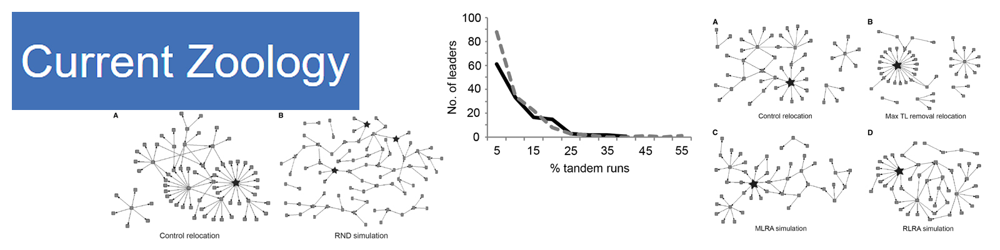

More details about my work
- Paul, B., Paul, M. & Annagiri, S., 2016. Opportunistic brood theft in the context of colony relocation in an Indian queenless ant. Scientific Reports, 6 (36166). Link

Media coverage of the publication:
1. Research Matters
2. Livemint: Mint on Sunday
- Annagiri, S., Kolay, S., Paul, B. & Sona, C., 2016. Network approach to understanding the organization of and the consequence of targeted leader removal on an end-oriented task. Current Zoology, p. zow058. Link

© Copyright 2016 Bishwarup Paul